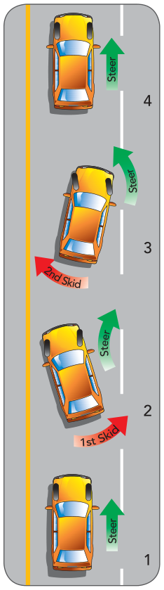
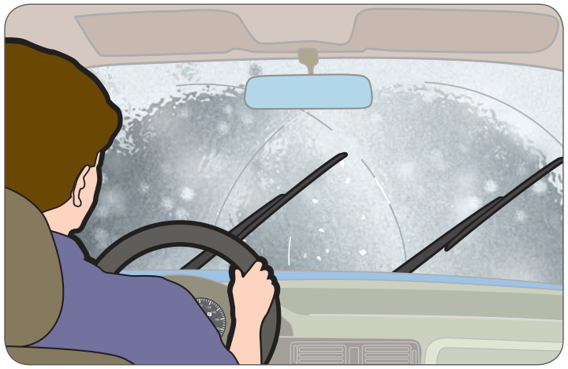
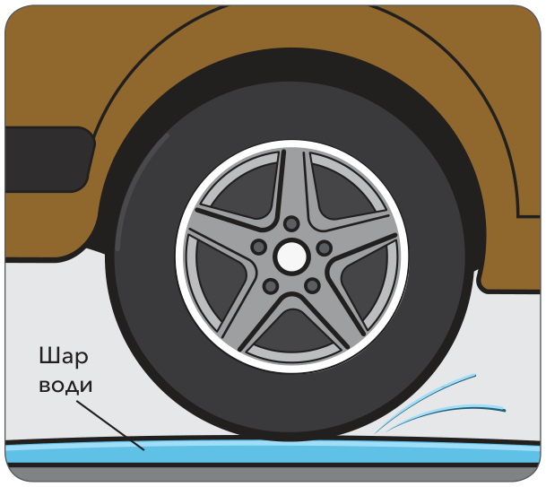
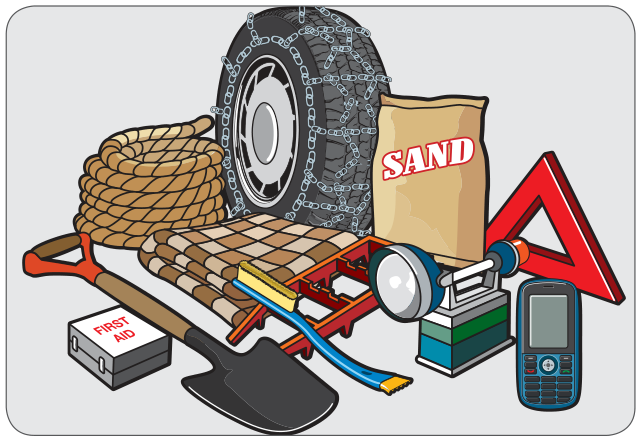
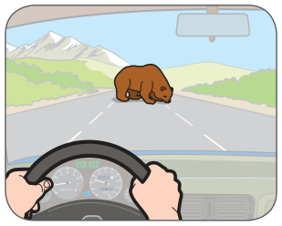
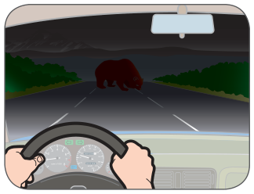
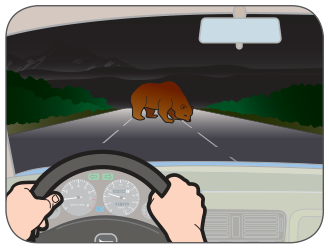
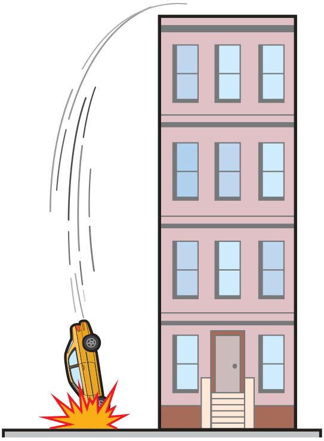

стратегії в надзвичайних ситуаціях
Розділ 7 дав корисні стратегії, які допомагають вам справлятися з особистими ситуаціями, що можуть негативно впливати на ваше водіння. У цьому розділі описано дві головні стратегії дій у надзвичайних ситуаціях за кермом і багато практичних порад, які допоможуть вам контролювати обставини й не допустити виникнення надзвичайної ситуації.
Підготовка до надзвичайних ситуацій
Ніхто насправді не очікує потрапити в надзвичайну ситуацію, але можете бути певні, що колись ви зіткнетеся з нею за кермом. Найкращий спосіб діяти в надзвичайних ситуаціях — бути готовим. Один зі способів підготуватися — прорепетирувати свої дії. Спробуйте такі кроки:
1. Під час їзди дивіться вперед і оглядайте дорожню ситуацію, шукаючи можливі небезпеки (дитина вибігає на дорогу, велосипедист відвертає у вашу смугу, автомобіль раптово зупиняється попереду).
2. Запитайте себе: Що б я зробив? (гальмувати, відвернути, зупинитися на краю дороги тощо)
Найкраща підготовка — завжди бути пильним і керувати за стратегією дивись – думай – дій. Якщо ви пильні й приймаєте правильні рішення на основі своїх спостережень, ви зазвичай зможете виконати потрібну дію за кермом до того, як виникне надзвичайна ситуація.
Не забудьте підготувати транспортний засіб до надзвичайних ситуацій. Тримайте в ньому потрібне аварійне обладнання, яке допоможе вам справлятися з ситуаціями, описаними в цьому розділі.
Стратегії водіння в надзвичайних ситуаціях
Дві стратегії для дій у небезпечних ситуаціях — екстрене гальмування і контроль заносу. Ці стратегії складні. Відпрацьовуйте їх лише в безпечному місці під наглядом досвідченого водія.
Екстрене гальмування
Навіть коли ви уважно оглядаєте дорогу, можуть виникнути неочікувані небезпеки. Коли це станеться, вам може знадобитися екстрене гальмування.
Головне в екстреному гальмуванні — зупинити транспортний засіб якомога швидше, не заблокувавши гальма. Якщо ви заблокуєте гальма, колеса перестануть обертатися. Ви втратите контроль над керуванням рулем, і автомобіль може піти в занос.
Антиблокувальні системи гальм (ABS)
Більшість нових транспортних засобів мають ABS, яка дає змогу гальмувати й керувати рулем одночасно. Зі звичайними гальмами так зробити не можна. У надзвичайній ситуації, якщо у вас є ABS, натискайте на педаль гальма постійно, твердо й сильно, доки транспортний засіб не зупиниться. Комп’ютеризовані датчики автоматично відпускають гальма на колесах, щоб не допустити блокування.
Попри те, у що вірять деякі люди, ABS не дає змоги їхати швидше і не завжди дає змогу зупинитися раніше. На деяких покриттях, як-от гравій, гальмівний шлях може бути довшим. Але ABS може допомогти не допустити блокування коліс на мокрих і слизьких покриттях.
Якщо ваш транспортний засіб має ABS, обов’язково прочитайте посібник з експлуатації, щоб отримати повнішу інформацію про техніки екстреного гальмування.
Контроль заносу
Занос може статися будь-коли, коли шини втрачають зчеплення з дорогою. Причиною можуть бути слизькі покриття, як у ситуації вище, або надто раптова зміна швидкості чи напрямку. Такі чинники довкілля, як дощ і лід, сприяють заносу, але головна причина заносу — погані навички водіння. Щоб уникати заносів, застосовуйте навички дивись – думай – дій. У слизьких умовах сповільнюйтеся.
Кроки для подолання заносу
Ілюстрація показує, що відбувається з вашим автомобілем під час заносу і як ви можете відновити контроль. Номери на ілюстрації відповідають наведеним нижче крокам:
1. Ви їдете прямо, але не помічаєте ділянки ожеледі попереду.
2. Коли ви проїжджаєте ожеледь, задню частину транспортного засобу заносить праворуч. Плавно відпустіть акселератор, дивіться й плавно керуйте рулем у тому напрямку, куди хочете рухатися. (У цьому випадку — праворуч.) Не гальмуйте — це погіршить ситуацію.
3. Тепер задню частину транспортного засобу заносить ліворуч. (Це, найімовірніше, спричинено надмірним коригуванням у кроці 2.) Не натискайте акселератор і плавно керуйте рулем у тому напрямку, куди хочете рухатися. (У цьому випадку — ліворуч.) Можливо, вам доведеться повторювати кроки 2 і 3, доки ви не відновите контроль.
4. Відновивши контроль, продовжуйте рух з обережністю.

Небезпеки довкілля
У B.C. туман, сильний дощ і сніг можуть створювати складні умови водіння. Дощ, сніг і лід роблять покриття дороги непередбачуваним. Слизьке покриття дороги небезпечне для водіїв та їхніх пасажирів і може призвести до аварій із кількома транспортними засобами.
Втрата видимості

Погодні умови, як-от туман, дощ або сніг, також можуть засліплювати. Якщо ви не бачите чітко ні попереду, ні позаду, ваша інформація про дорожню ситуацію небезпечно зменшується. У таких умовах ви не можете приймати правильні рішення за кермом.
Відблиски та тіні
Змінні умови освітлення можуть знизити вашу здатність бачити. Відблиски можуть засліпити вас удень або вночі під час зустрічі з транспортними засобами з яскравими фарами. Темні тіні можуть приховувати небезпеки.
Втрата зчеплення з дорогою
Дощ, сніг і лід можуть впливати на ваше зчеплення з дорогою. Сипкий гравій, мокре листя, багнюка або пісок також роблять дороги слизькими й небезпечними. Сповільнюйтеся та будьте обережні, коли їдете будь-яким покриттям з низьким зчепленням, а в надзвичайно погану погоду не їдьте зовсім.
Дощ
Дощ може створювати дві небезпечні умови водіння:
- втрату зчеплення з дорогою
- аквапланування.
Дощ робить покриття дороги слизьким, особливо на початку дощу. Дощова вода змішується з олією на дорозі й утворює слизьку масляну плівку. Ця плівка змивається, якщо дощ триває, але якщо дощ слабкий або якщо дощу довго не було, дорога залишатиметься слизькою довше.
Аквапланування відбувається, коли шини втрачають контакт із покриттям дороги й пливуть по плівці води. Водій миттєво втрачає контроль над керуванням рулем і гальмуванням. Це може статися в дощ або на стоячій воді. Чим вища ваша швидкість, тим більша ймовірність аквапланування. Ви розпізнаєте аквапланування за тим, що керування рулем раптово стане дуже легким.

Глибока вода
Через глибоку воду ваш транспортний засіб може заглохнути, а двигун або коробка передач — навіть пошкодитися. Якщо перед вами вода через усю дорогу, розгляньте можливість повернути назад і поїхати іншим шляхом. Якщо ви не можете об’їхати цю ділянку дороги, їдьте через неї дуже повільно. Виїхавши з води, легко натискайте гальма протягом короткої відстані, щоб їх просушити. Рухома вода, глибша за пів метра, може знести автомобіль.
Лід і сніг
Лід і сніг можуть дуже швидко позбавити вас зчеплення з дорогою. Без зчеплення колеса буксують під час розгону й блокуються під час гальмування. Ви легко втратите контроль над керуванням рулем.
Узимку температура може швидко змінюватися, роблячи зчеплення з дорогою непередбачуваним. Температура близько нуля небезпечніша за нижчу, хоча дорога може виглядати однаково, бо лід може утворитися неочікувано й бути невидимим.
Пам’ятайте про приховані небезпеки:
- Ожеледь утворюється, коли волога замерзає на покритті дороги. Зазвичай ви її не бачите. Але якщо асфальт виглядає блискучим і чорним, а не сіро-білим, будьте насторожі.
- Затінені ділянки можуть залишатися обледенілими навіть після того, як сонце розтопило лід на інших частинах дороги.
- Мости та шляхопроводи зазвичай укриваються льодом раніше, ніж інші покриття дороги.
- Перехрестя швидко обледенюють через вихлопні гази автомобілів і втоптаний сніг.
Якщо ви застрягли або вас засипало снігом
Якщо ви застрягли в снігу, залишайтеся у своєму транспортному засобі, якщо ви не цілком упевнені, що зможете дійти до допомоги.
Якщо ви вирішили запускати двигун, щоб зберігати тепло в салоні, робіть це лише приблизно по п’ять хвилин щогодини. Будьте дуже обережні, бо автомобіль може наповнитися монооксидом вуглецю. Отруєння монооксидом вуглецю може спричинити запаморочення або сонливість і навіть призвести до смерті. Обов’язково перевірте також, чи не заблоковані й не пошкоджені вихлопна труба та система випуску відпрацьованих газів, бо це може посилити проникнення монооксиду вуглецю в автомобіль. Постійно тримайте одне вікно трохи відчиненим для свіжого повітря. Забезпечте, щоб принаймні одна людина постійно не спала.

Турбулентність
Будьте уважні до бічного, лобового та попутного вітру. Через них вам може бути важко керувати рулем. Навіть автопоїзд, що проїжджає поруч, може створити достатню турбулентність, щоб зсунути транспортний засіб.
Нічні небезпеки
Водіння вночі — випробування для всіх водіїв. Ваша видимість обмежена, і вас теж гірше видно. Крім того, ви гірше оцінюєте відстані. Вам потрібно бути пильнішими, щоб дієво застосовувати дивись – думай – дій.
Використання фар
Переконайтеся, що ви використовуєте потрібні фари відповідно до умов руху. Ближнє світло освітлює шлях до 30 метрів прямо перед вами. Дальнє світло дає приблизно 100 метрів освітлення.
Обов’язково користуйтеся фарами правильно:
- Ви повинні використовувати фари з 30 хвилин після заходу сонця до 30 хвилин перед сходом сонця.
- Заборонено їхати вночі зі стоянковими ліхтарями чи денними ходовими вогнями замість фар.
- Ви повинні приглушувати дальнє світло, коли перебуваєте за 150 метрів від іншого транспортного засобу — і коли їдете назустріч, і коли рухаєтеся позаду. Вам важко оцінювати відстані? Більшості людей теж. Будьте ввічливі й приглушуйте фари заздалегідь.
- Ви також повинні використовувати фари, якщо видимість зменшилася до менш ніж 150 метрів (наприклад, у тумані або сильному дощі).



Удень
Ближнє світло фар
Дальнє світло фар
Швидкість вища за зону освітлення фар
Будьте обережні, щоб не їхати швидше, ніж дозволяє зона освітлення фар, — уночі, у тумані, дощі чи снігу. Це трапляється, коли ви їдете надто швидко й не можете зупинитися в межах відстані, яку освітлюють фари. Особливо небезпечно це в повороті.
Поломки транспортних засобів
Неочікувана поломка транспортного засобу може створити небезпечну ситуацію для вас і ваших пасажирів. Найкраще запобігти їй допомагають добре обслуговуваний транспортний засіб, регулярні періодичні перевірки та перевірки перед поїздкою.
Розрив шини
Коли розривається передня шина, ваш транспортний засіб може тягнути в бік спущеної шини, особливо на високій швидкості. Розрив задньої шини може спричинити занос транспортного засобу.
Відмова гальм
Повна відмова гальм трапляється рідко. Однак, якщо гальмівна система відмовляє, вам потрібно застосувати навички дивись – думай – дій, щоб зреагувати швидко й безпечно.
Проблеми з двигуном
Ніколи не знаєш, коли двигун може заглохнути. Якщо це станеться, вам потрібно якнайшвидше вийти з транспортного потоку в безпечне місце.
Відмова фар
Їхати вночі без фар небезпечно й незаконно. Якщо ваше освітлення відмовить, ви повинні якнайшвидше залишити дорогу.
Відкидання капота вгору
Капот може відкинутися вгору, якщо він не зафіксований надійно. Якщо ви помітили, що ваш капот зафіксований неправильно, зупиніться на краю дороги й повністю закрийте капот.
Заклинювання педалі акселератора
Педаль акселератора може заклинити через намерзання льоду чи снігу, якщо килимок на підлозі підсунувся й затиснув педаль, або через несправність.
Якщо в момент заклинювання ви рухаєтеся дуже повільно, вам, можливо, вдасться звільнити педаль, піднявши її носком.
Тварини на дорозі
У B.C. тварини на дорозі — серйозна небезпека. Зіткнення з великою твариною може спричинити пошкодження й травми не лише тварині, а й вам і вашим пасажирам.
Уникнення зіткнення
Ніхто не хоче потрапити в зіткнення, але ви можете опинитися в ситуації, коли воно неминуче. Найкращий спосіб уникати зіткнень — застосовувати навички «дивись – думай – дій». Будьте пильними, оглядайте систематично, тримайте добрий запас простору й рухайтеся з відповідною швидкістю. Ці кроки допоможуть вам уникнути більшості зіткнень.
Навіть якщо ви стикаєтеся з неминучим зіткненням, ви іноді можете зменшити силу удару. Але для цього вам потрібно швидко думати.

Як показано на малюнку вище, подвоєння швидкості вчетверо збільшує силу удару. Це одна з причин, чому швидкість є таким важливим чинником в аваріях і чому сповільнення рятує життя.
На місці аварії
Ви приїжджаєте на місце аварії
Якщо інші водії потрапили в аварію, їм може знадобитися допомога.
Ви потрапили в аварію
Юридичні обов’язки
Ви маєте певні юридичні обов’язки, якщо:
- ви потрапили в аварію
- інші водії потрапили в аварію через щось, що ви зробили.
У кожному з цих випадків ви за законом зобов’язані:
1. Залишитися на місці.
2. Надати всю розумну допомогу. Викликати екстрені служби, якщо можете і якщо це потрібно.
3. Ви повинні обмінятися такою інформацією з іншим водієм, з кожним, хто отримав травми, і з кожним, чиє майно пошкоджено:
- ваше ім’я та адреса
- ім’я та адреса зареєстрованого власника транспортного засобу
- номер номерного знака
- інформація про страхування.
Ви також повинні надати цю інформацію поліції або свідку, якщо про це попросять.
Пропозиції
Ось ще кілька речей, які вам слід зробити:
- Приберіть транспортні засоби з дороги, якщо це безпечно.
- Не обговорюйте, хто винен в аварії.
- Запишіть імена та адреси всіх свідків.
- Обміняйтеся номерами посвідчень водія з іншими водіями, причетними до аварії.
- Зробіть схему або сфотографуйте місце аварії, зазначивши умови, як-от час, місце й погоду.
- Негайно повідомте свою страхову компанію.